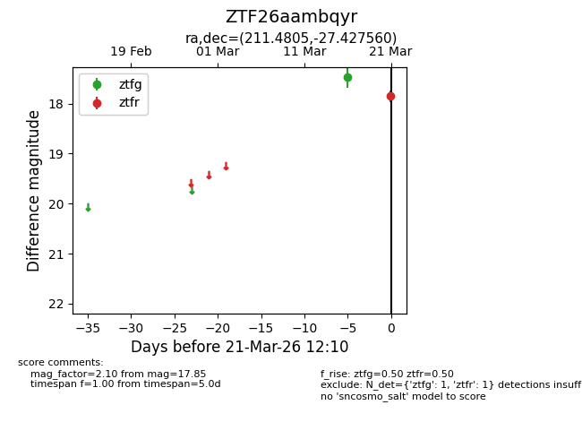
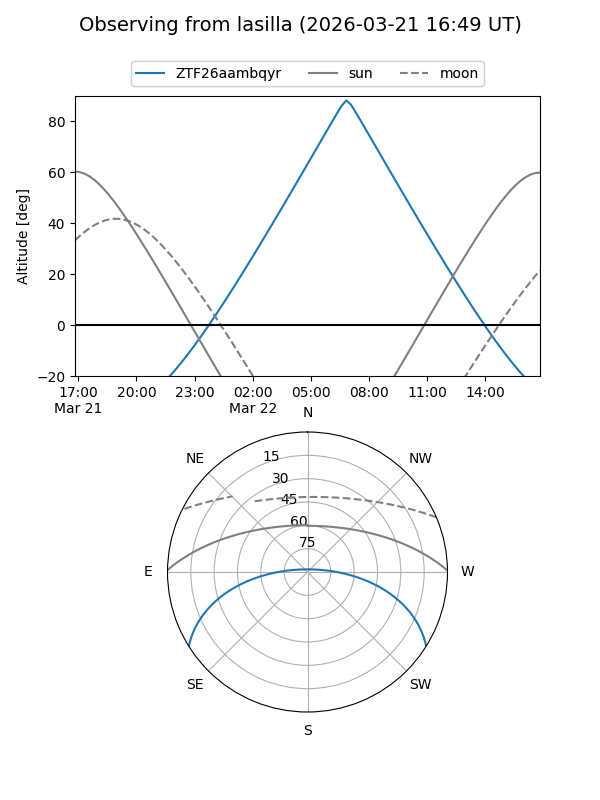
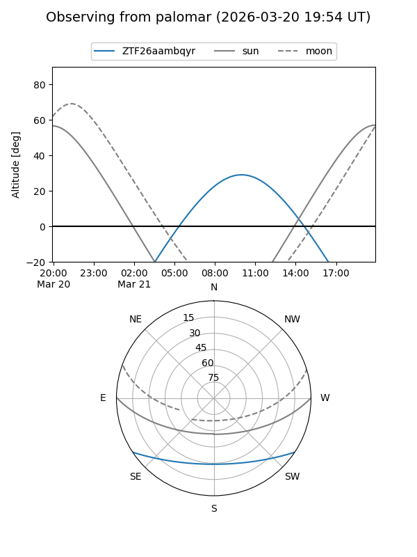

ZTF26aambqyr
Target ZTF26aambqyr at 2026-03-21 12:12
Aliases and brokers:
FINK: link
Lasair: link
ALeRCE: link
alt names
ZTF26aambqyr (ztf,fink_ztf)
Coordinates:
equatorial (ra, dec) = 211.4805,-27.42756
equatorial (HMS+DMS) = 14:05:55.33,-27:25:39.22
galactic (l, b) = (322.5874,+32.58544)
Flags:
Photometry:
last ztfg=17.47, ztfr=17.85
1 ztfg, 1 ztfr detections
Lightcurve

Visibility


Additional plots